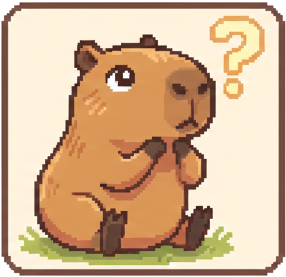
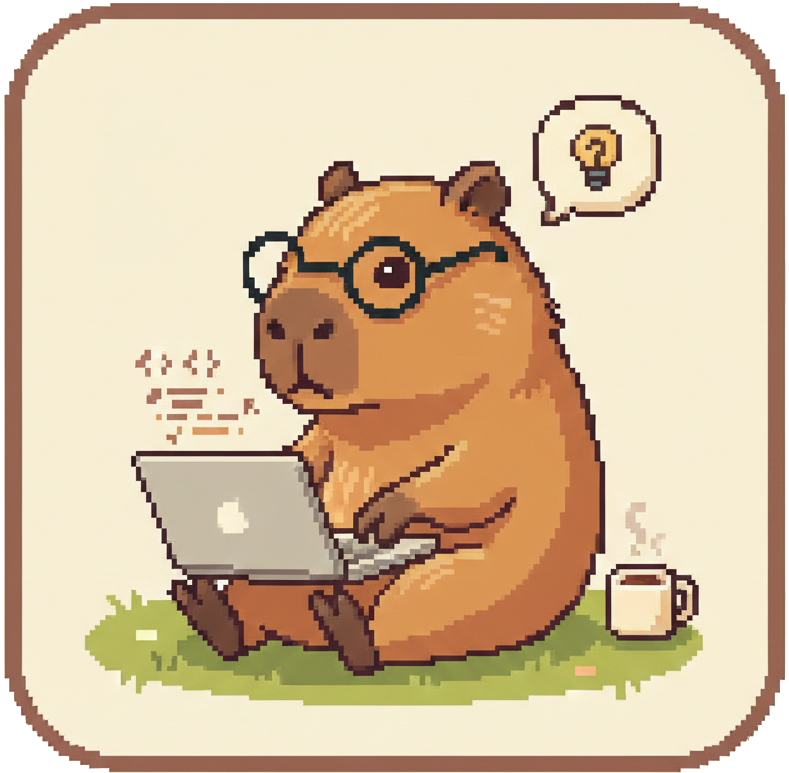
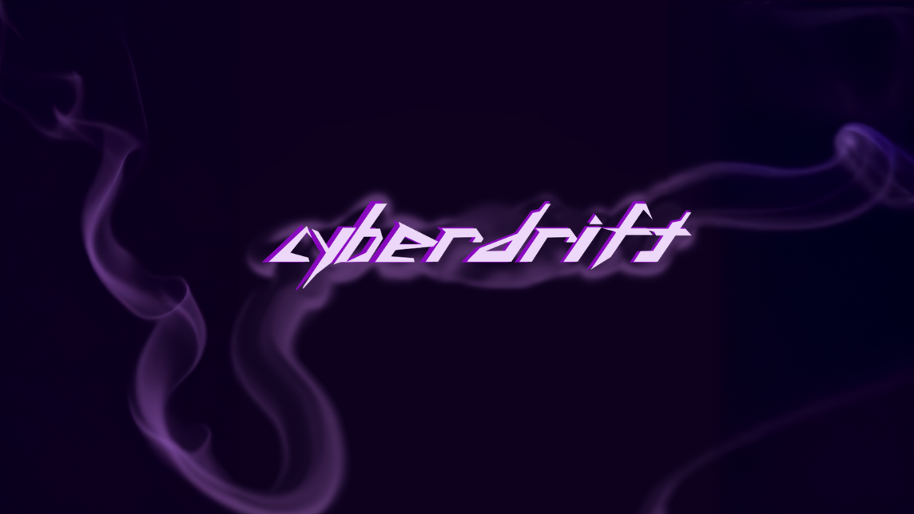
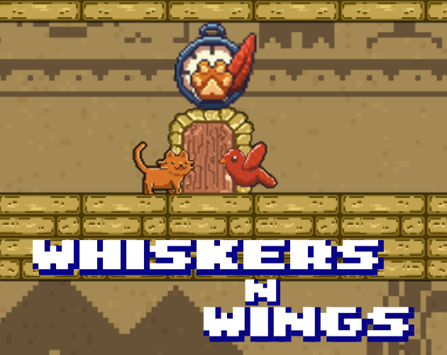
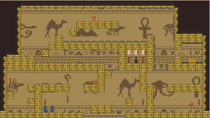
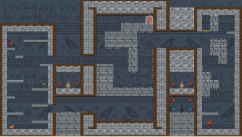

Qui suis-je ?
Étudiante au Gaming Campus, je suis passionnée par l'univers du jeu vidéo (et surtout par les capybaras !).
Très ouverte d’esprit et curieuse de nature, j’aime découvrir de nouvelles expériences et explorer le fonctionnement des mécaniques de jeu.
Mon objectif est d’intégrer un studio afin de mettre à profit mes compétences et de contribuer à des projets ambitieux qui donnent le sourire aux joueurs!
Stack technique : Unity (C#), Unreal (Blueprint), Github, Trello.

Mes Projets


Cyberdrift
Un Shoot-em Up dans un environnement cyberpunk à l'occasion d'une exposition au musée Malartre.



WhiskersNWings
Un platformer en co-op où le joueur voyagera dans le temps où collaboration est requise.
Testeur
Test de l'affichage du 3eme jeu
 Voir + de projets
Voir + de projets
 Github
Github
Mon profil vous plaît? Contactez-moi !
Veuillez sélectionner le moyen de contact souhaité, à très vite! ☺️
 Mon E-mail
Mon E-mail
 Mon LinkedIn
Mon LinkedIn